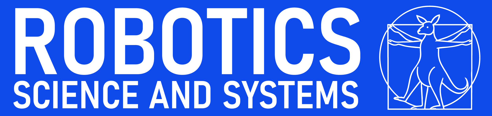

Stabilizing 3D Continuum-Arm Rollouts via Equilibrium Anchoring and Feature-Lifted Residual Learning
A hybrid predictor that separates steady-state anchoring from transient correction to keep long-horizon rollouts stable under actuation shift.